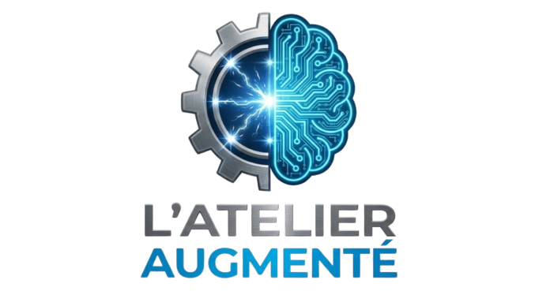

Création et vente de logiciels pédagogiques et de manuels numériques et papier. En complément : formation au numérique éducatif.
Organisme de formation n° 44540498054 — Préfet de région Grand Est📧 contact@latelieraugmente.fr
📍 Région de Nancy, Grand Est